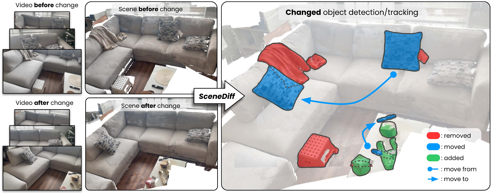
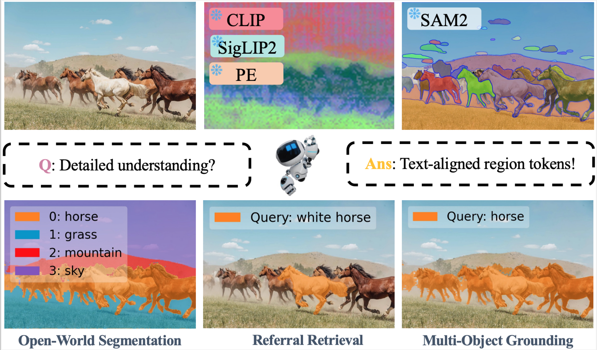
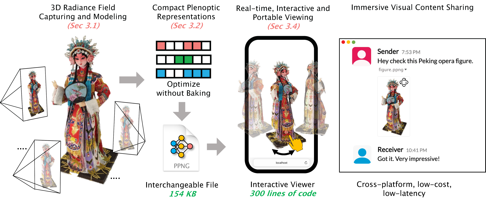
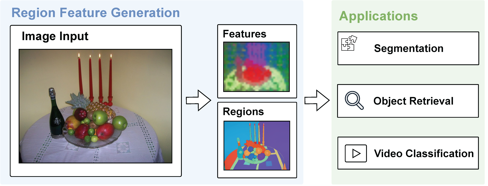
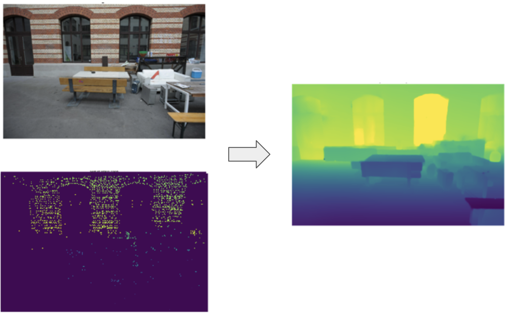
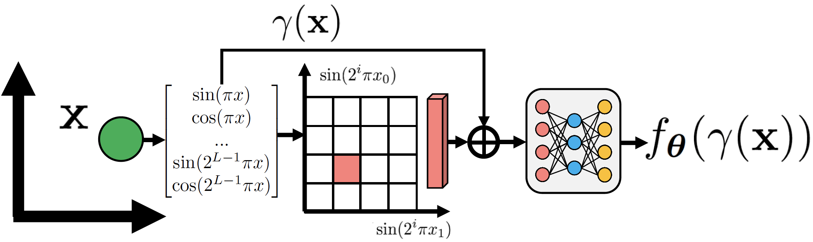

|
I am a third year Ph.D. student in Computer Science at the University of Illinois at Urbana-Champaign, advised by Prof. Derek Hoiem. I also work closely with Prof. Shenlong Wang. I received my MS and BS degrees from UIUC, with my undergraduate degree in Computer Science & Statistics. I spent the summer of 2025 at Meta and did a summer intern at UCSD in 2022. |

|
|
My research interests mainly lie in computer vision, especially for 3D scene understanding, video understanding, neural rendering, and geometry reconstruction. |
|  |
Yuqun Wu, Chih-hao Lin, Henry Che, Aditi Tiwari, Chuhang Zou, Shenlong Wang, Derek Hoiem Under Review Project Page , Preprint , Code , Dataset , Annotator Propose a dataset and a new method for object change detection between a pair of captures (images or videos) of the same scene at different times. |
|  |
Yao Xiao, Qiqian Fu, Heyi Tao, Yuqun Wu, Zhen Zhu, and Derek Hoiem TMLR 2025 Preprint , Code Propose a training-free approach to create text compatible region tokens, enabling powerful zero-shot region-level understanding with existing image-text models. |

|
Yuqun Wu*, Jae Yong Lee*, Chuhang Zou, Shenlong Wang , and Derek Hoiem 3DV 2025 Project Page , Preprint , Code Create 3D models that provide accurate geometry and view synthesis, partially closing the large geometric performance gap between NeRF and traditional MVS methods |
|  |
Jae Yong Lee, Yuqun Wu, Chuhang Zou, Derek Hoiem , and Shenlong Wang 3DV 2025 Project Page , Preprint , Code Encode 3D scenes into extremely compact representation from 2D images and enable its transmittance, decoding and rendering in real-time across various platforms via traditional GL pipeline. |
|  |
Michal Shlapentokh-Rothman*, Ansel Blume*, Yao Xiao, Yuqun Wu, Sethuraman T V, Heyi Tao, Jae Yong Lee, Wilfredo Torres, Yu-Xiong Wang, and Derek Hoiem CVPR 2024 Project Page , Preprint , Code Investigate region based representation, combining class-agnostic segmentation from SAM and dense features from foundation models, for a wide variety of tasks, including semantic segmentation, object-based image retrieval, and multi-image analysis. |
|  |
Yuqun Wu*, Jae Yong Lee*, and Derek Hoiem Preprint Propose a novel method that outperforms existing depth completion pipelines given sparse keypoint depth, and reconstructs complete point clouds given SfM setups |
|  |
Jae Yong Lee, Yuqun Wu, Chuhang Zou, Shenlong Wang, and Derek Hoiem Preprint Present Quantized Fourier Features (QFF), which encodes features in bins of Fourier features, and can result in smaller model size, faster training, and better quality outputs for various applications of neural representation |
|
Teaching Assistant: Computational Photography (Fall 2022), Applied Machine Learning (Spring 2023) Reviewer: CVPR 2025, ECCV 2024, WACV 2025 |
Updated on Sep 5 2025. Thanks Jon Barron for his amazing template.